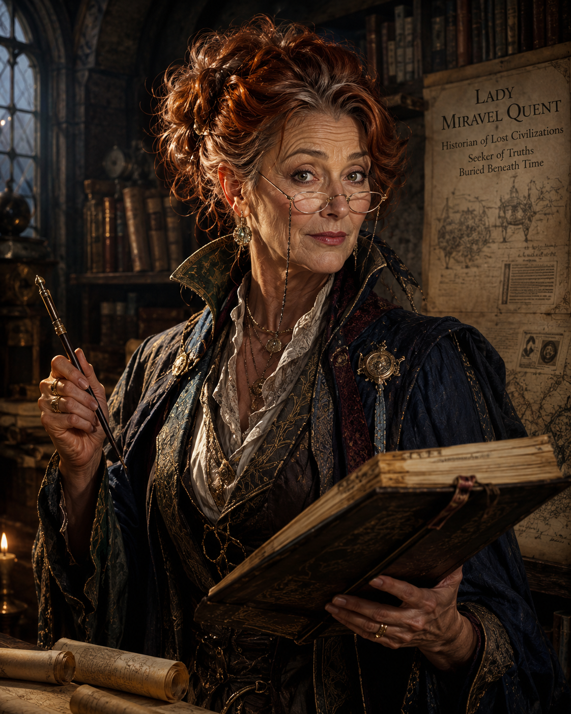
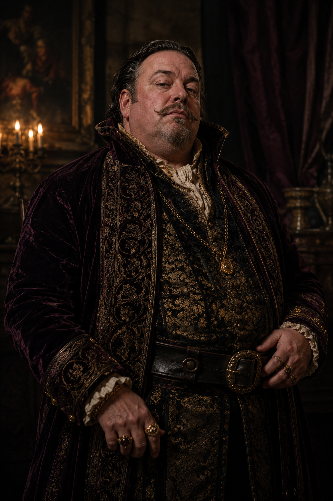
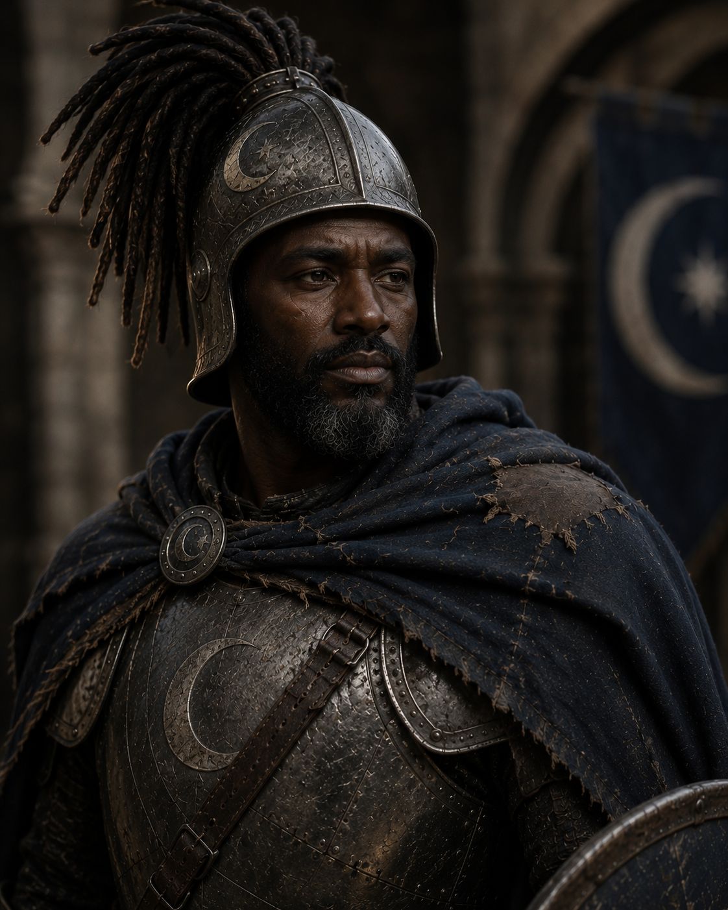

Lady Miraval Quent was a familiar presence in the quieter halls of Impiltur’s learned circles, a figure whose age only seemed to sharpen rather than dull her restless curiosity. Now in her sixties, she carried herself with the brisk energy of someone who had long since outpaced the expectations of both court and time. Her silvering auburn hair was typically pinned up in a practical, slightly chaotic arrangement that always seemed one strong idea away from unraveling. Deep lines at the corners of her eyes did little to diminish their brightness; they only framed a gaze that still sparked with discovery whenever ancient texts or forgotten histories were mentioned. She spoke with rapid enthusiasm, often forgetting that others could not match the speed of her thoughts, as she stitched together theories, half-remembered passages, and speculative leaps in a single breathless stream of conversation.
Despite her reputation as an excitable noble scholar, Lady Quent is one of the kingdom’s most persistent and well-traveled historians, having spent decades tracing fragments of civilizations long erased from memory. Her work has earned her rare access to sealed archives and led her into ruins others consider too unstable or too cursed to enter. She claims her life’s purpose is the discovery of a lost civilization that predates even the oldest recorded empires of Faerûn, though few realize how close she has already come to that truth. In truth, Miraval knows more about the location tied to Prince Edric’s quest than she openly admits, holding back key details behind carefully chosen omissions and academic misdirection. Whether motivated by caution, reverence for what she has uncovered, or fear of the consequences of full disclosure, she remains a valuable—if unpredictable—ally, guiding adventurers through history skill challenges with equal parts brilliance, misdirection, and buried intent.

Lord Blance Vramor was the sort of man whose wealth entered a room before he did. One of the more influential grain merchants operating beneath the shadow of Lyrabar, Vramor wrapped himself in layers of expensive velvet, jeweled rings, and perfumes strong enough to smother the scent of the docks where his fortune had been made. Age had softened him nowhere except around the waist; his pale, fleshy face sagged beneath carefully groomed facial hair, while his small eyes constantly shifted with the nervous suspicion of a man convinced everyone around him wanted a piece of what he owned. Though technically a lord through purchased titles and a couple carefully arranged marriages, old noble families rarely considered him one of their own. Vramor compensated for this with displays of excess and cruelty, surrounding himself with hired guards, flatterers, and accountants while demanding absolute obedience from anyone beneath him. He was known throughout the reaches of Impiltur as a merchant who never wasted a tragedy if profit could be wrung from it.
What made Vramor truly dangerous was not rage or ambition, but indifference. To him, hunger was merely leverage, desperation a tool as useful as coin or steel. During the failed harvests that crippled the countryside outside Lyrabar, Vramor hoarded grain stores behind guarded warehouses while entire villages faced near starvation, driving prices ever higher as suffering deepened. He delighted in making examples of those who defied him, believing fear was the only language poor folk truly understood. When he uncovered Ellawain Vikvander’s schemes to smuggle and steal food for her starving town, he chose not to punish the young elf directly. Instead, he burned Andrisa’s bakery to the ground in full view of the community, ensuring that everyone understood the cost of crossing him. Even then, witnesses claimed Vramor watched the fire with detached amusement rather than fury, as though human misery were little more than a tedious necessity of business. The masses needed to learn.
Seraphina Vale of the Temple of the Synod is a cleric of striking composure and quiet authority, the kind of healer whose presence alone seems to steady a room. She moves with practiced grace, her faith expressed not through grand displays but through precise, confident acts of divine service. In moments of injury or crisis, she is rarely seen panicking; instead, she assesses with calm clarity, her hands already weaving subtle blessings and restorative prayers before others have fully grasped what is wrong. Her voice carries certainty when she speaks rites or offers counsel, and many come to rely on her not only for healing, but for the sense of order she brings to chaos.
As a devotee of the divine, Seraphine’s magic manifests with an elegance that feels almost effortless, though those familiar with the workings of faith recognize the depth of discipline beneath it. Wounds close under her touch with unnerving smoothness, burdens of pain and exhaustion lift at her whispered invocations, and protective wards seem to settle into place as naturally as breath. She is particularly adept in moments of uncertainty, where her guidance and blessings can mean the difference between collapse and endurance. Whether tending to the wounded, bolstering allies before conflict, or offering quiet prayers in the aftermath of hardship, Seraphine Vale embodies the reassuring strength of a cleric wholly devoted to preserving life and guiding others through adversity.
Sir Bollodar Draust cut an unusual figure among the knights and temple guardians of Lyrabar. Though broad-shouldered and standing over six feet tall, he carried himself with the easy posture of a traveler rather than the rigid bearing of a courtly noble. His weathered features, dark beard streaked with early silver, and battered moon-etched armor spoke of years spent on muddy roads and forgotten shrines instead of tourneys and feasts. Bollodar favored practicality over pageantry; his cloak was often patched, his shield scarred from real battles, and his sword worn from constant use. Despite his rough appearance, he possessed a calm, steady voice that carried surprising warmth, particularly toward outcasts, pilgrims, and those whom society overlooked. Among the clergy of Selûne, he was regarded as unconventional—too independent for some, too compassionate for others—but few doubted either his courage or his devotion to the Moonmaiden.
Bollodar’s greatest strength was not his skill at arms, though he was an accomplished knight-errant, but his ability to recognize pain and fury in others without condemning them for it. Where many in the temple saw Ikari as a dangerous embarrassment, Bollodar saw a frightened young man struggling beneath burdens no child should bear. He possessed a patient wisdom earned through long years wandering the roads of Impiltur, mediating disputes, hunting creatures of darkness, and sleeping beneath the open sky rather than within noble estates. During his travels with Ikari, Bollodar became equal parts mentor, guardian, and grounding influence, teaching discipline not through harsh punishment but through quiet example. Though never famed in royal courts or celebrated in song, Sir Bollodar Draust earned deep respect among common folk and fellow wanderers alike—a knight whose honor was measured not by glory, but by the lives he steadied before they fell into darkness.